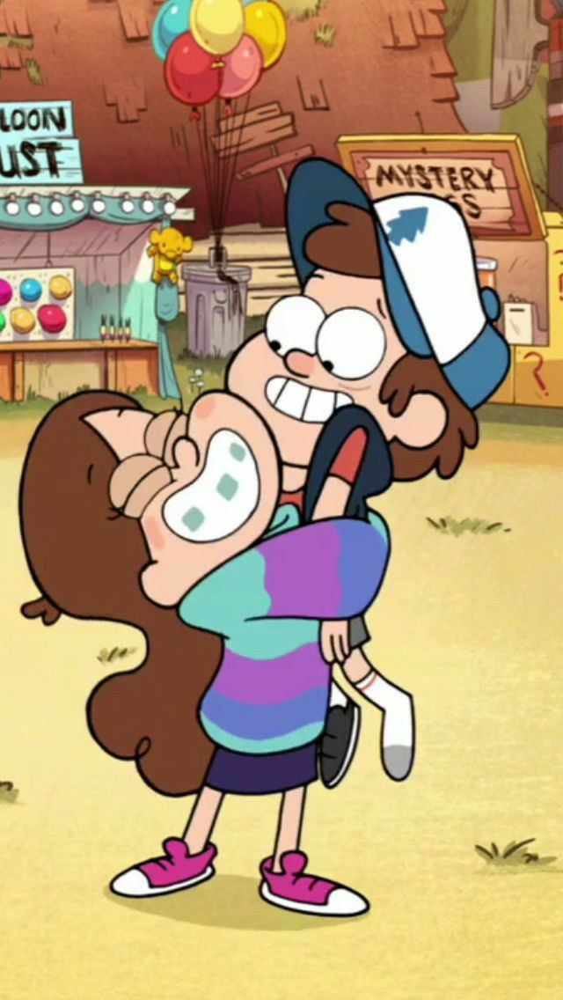
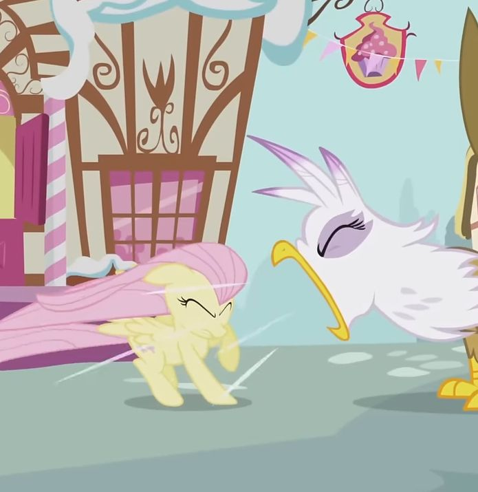
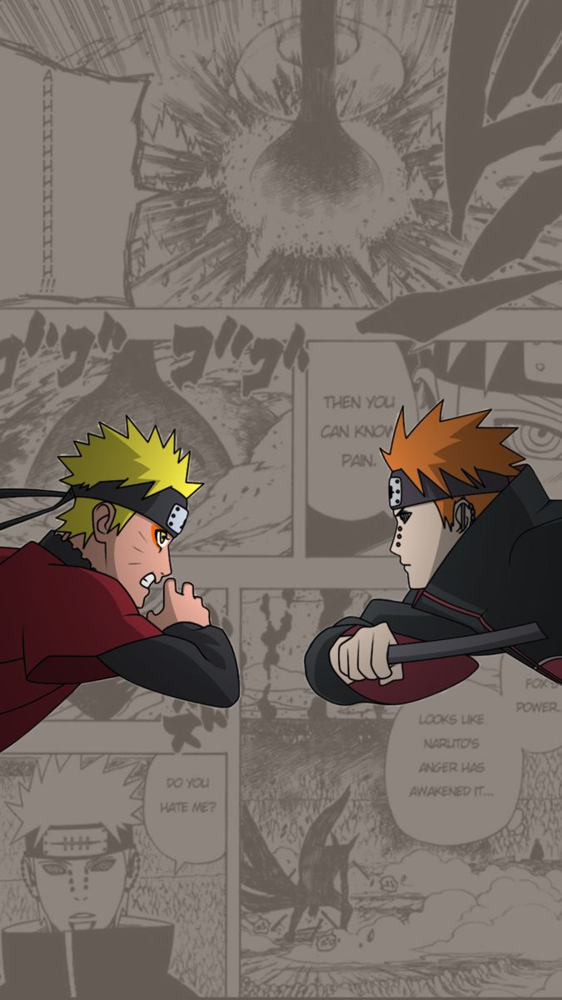
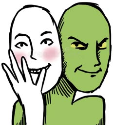
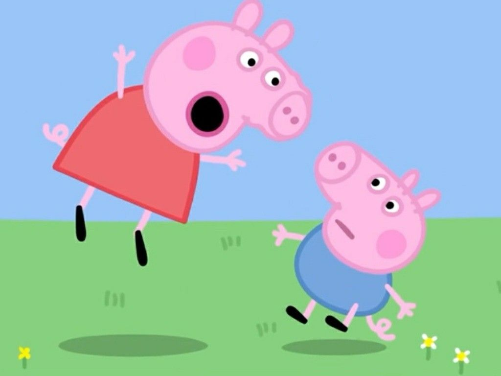

Tipos de Comunicación
Explora la matriz teórica completa de la conducta comunicativa y ponte a prueba
Conductas y Posturas
La forma en que expresamos nuestras necesidades, opiniones y emociones determina la efectividad del mensaje y la calidad de nuestras relaciones.

✨ Asertiva
🛡️ Pasiva
💥 Agresiva
🎭 Pasivo-Agresiva
⚡ Agresivo-PasivaLos 5 Estilos de Comunicación
✨ Asertiva
Expresa ideas, sentimientos y derechos de forma directa, firme y respetuosa, sin agredir ni someterse.
Clave: Escucha activa, firmeza sin hostilidad y postura abierta.
Ejemplo: "Entiendo tu punto, pero prefiero resolverlo de esta manera para asegurar la calidad."
🛡️ Pasiva (Sumisa)
Evita expresar pensamientos o emociones por temor al conflicto, anteponiendo siempre los deseos ajenos.
Clave: Mirada evasiva, tono bajo e incapacidad para fijar límites.
Ejemplo: "Está bien, hacemos lo que tú digas, no importa..." (aunque no esté de acuerdo).
💥 Agresiva
Impone ideas o derechos sin respetar los sentimientos ajenos, buscando dominar o confrontar.
Clave: Interrupciones, tono elevado, mirada desafiante e intimidación.
Ejemplo: "¡Esa idea no sirve para nada y se va a hacer exactamente como yo digo!"
🎭 Pasivo-Agresiva
Expresa la hostilidad o el rechazo de forma indirecta mediante el sarcasmo, indirectas o indiferencia.
Clave: Sarcasmo, decir "sí" de frente pero actuar con boicot disimulado.
Ejemplo: "No, tranquilo, hazlo tú solo como siempre... no es que necesites ayuda."
⚡ Agresivo-Pasiva
Inicia con un ataque directivo o explosivo, pero retrocede rápidamente asumiendo un rol de víctima o evasión.
Clave: Explosión inicial impulsiva seguida de replegamiento y drama.
Ejemplo: "¡Es tu culpa que todo salga mal!... Aunque bueno, ya da igual, haz lo que quieras."
🔍 Identificador de Estilo
Selecciona una respuesta para evaluar qué conducta transmite: